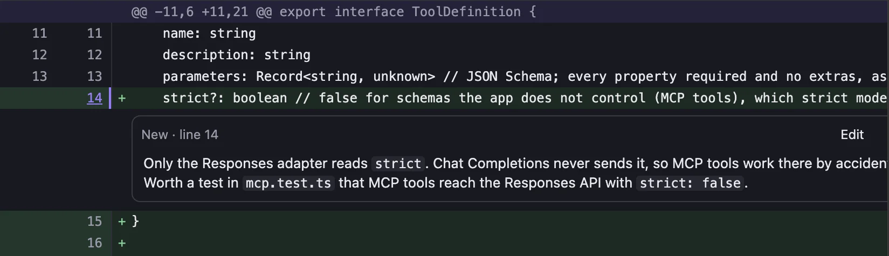
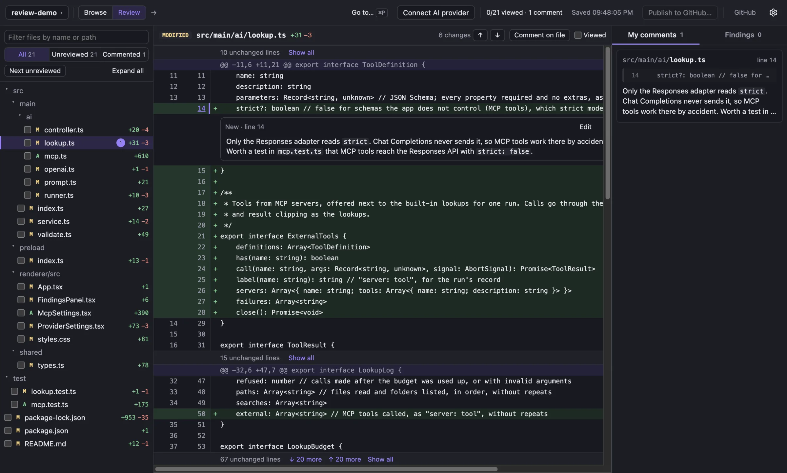
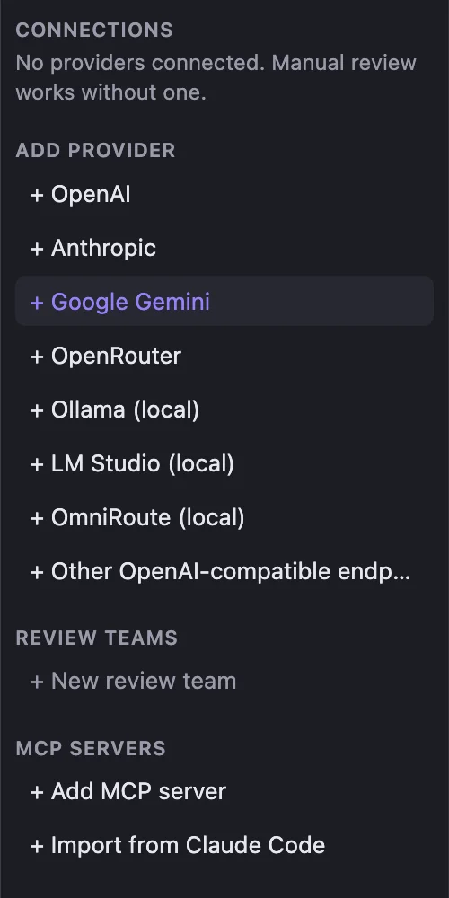
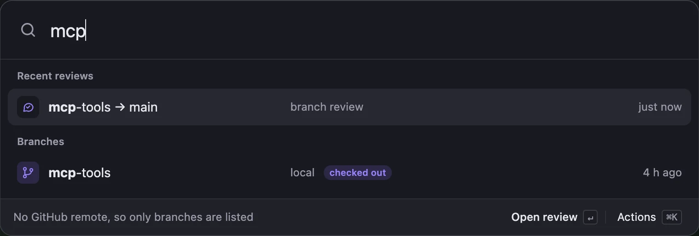
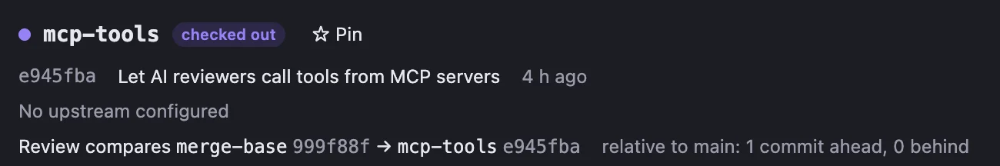

Comment on any line
Click a line number, write, done. Comments save as you type and stay on your computer.

A desktop app for Git branches and GitHub pull requests. Comment on any line, publish when you're ready, and add an AI reviewer with your own model, or none.

Works with
Click a line number, write, done. Comments save as you type and stay on your computer.

OpenAI, Anthropic, Gemini, OpenRouter, or a local model in Ollama or LM Studio. Reviewers can pull extra context from your MCP servers. Or skip AI entirely.

Pull requests waiting on you, recent reviews and branches, all a few keystrokes away.

Reviews compare from the merge base, so the diff doesn't move when someone pushes.

Comments go to your pending review on GitHub only when you publish. You choose when to submit.
Free. Needs Git installed.
The installers aren't signed with an Apple or Microsoft certificate yet, so your system asks once:
chmod +x Review-*.AppImage, then open the file.Prefer to build it yourself? Node 22.12+ and Git.
git clone https://github.com/hamedghaderi/review.git
cd review && npm install && npm run dev